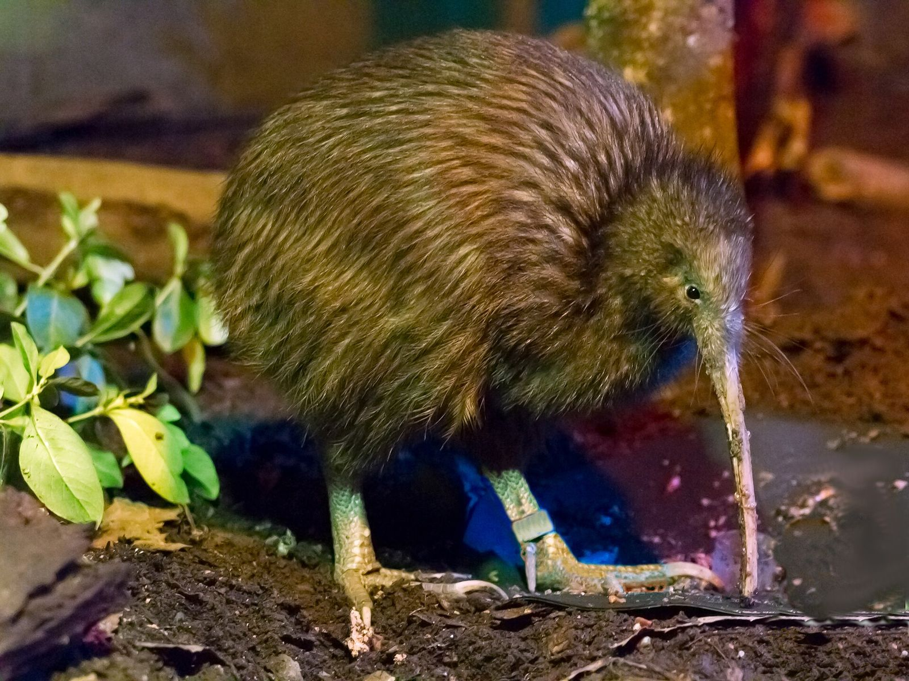
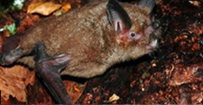
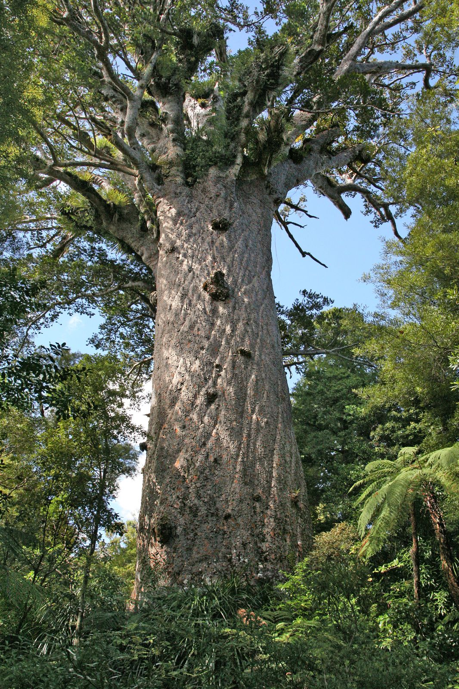
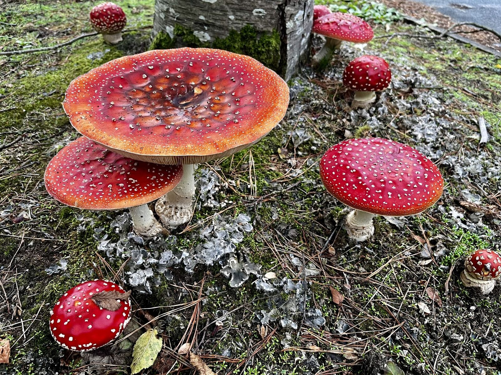
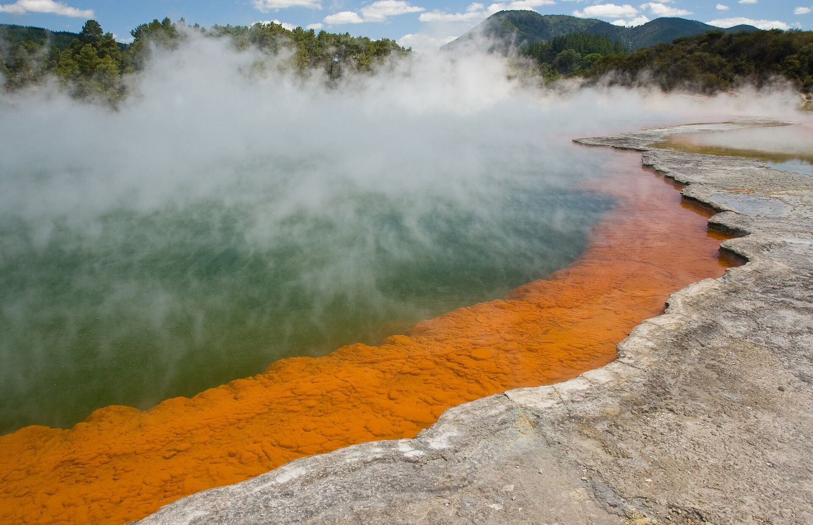
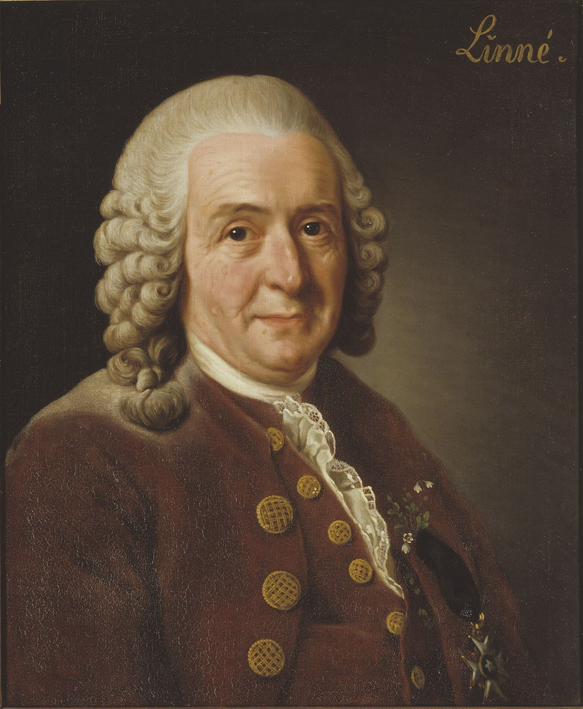

Year 9 Science · Lesson 2
Grouping living things
Classification
North Island brown kiwi, Rotorua. The.Rohit. CC BY 2.0

Starter
Sort these eight into groups. What rule did you use?

Kiwi

Pekapeka (bat)

Tuatara

Wētā

Tāmure (snapper)

Pepeketua (frog)

Kauri

Fly agaric
Kiwi: Maungatautari Ecological Island Trust, public domain. Bat: Santana et al., CC BY 4.0. Tuatara: Sid Mosdell, CC BY 2.0. Wētā: Tony Wills, CC BY 2.5. Snapper: fir0002, GFDL 1.2. Frog: public domain. Kauri: W. Bulach, CC BY-SA 4.0. Fly agaric: Kieran Roy Powell, CC BY 4.0.


.jpg){kind=link}


Starter, part two
Did you put the bat with the birds?
It flies, so it seems to fit. But scientists put the pekapeka in the same group as you.
It has fur, and the mother feeds her baby milk. Those features make it a mammal.
Scientists group living things by features that show they are related, not just features that look alike.
Key words
Classification
To classify means to place things into groups based on the features they share.
Biological classification is the system scientists use to describe how all living things are related to each other.
The biggest groups are the most general and hold a huge variety of living things. Each group splits into smaller groups whose members are more and more alike.
From biggest to smallest
Kiwis Play Cricket On Flat Green Surfaces
Top: big, general groups. Lots of variety.
Bottom: small, specific groups. Very alike.
Members of a species can breed together and have fertile offspring.
Worked example
How closely related are a kiwi and a tūī?
| Level | North Island brown kiwi | Tūī |
|---|---|---|
| Kingdom | Animalia | Animalia |
| Phylum | Chordata | Chordata |
| Class | Aves | Aves |
| Order | Apterygiformes | Passeriformes |
| Family | Apterygidae | Meliphagidae |
| Genus | Apteryx | Prosthemadera |
| Species | Apteryx mantelli | Prosthemadera novaeseelandiae |
They share three levels: both are birds, but not close relatives. The more levels two living things share, the more closely related they are.

Champagne Pool, Wai-O-Tapu · about 74 °C
Something lives in here. Which kingdom is it in?
Christian Mehlführer. CC BY 2.5

Above the kingdoms
Three domains of life
For years scientists used five kingdoms. Bacteria-like single cells all went into one kingdom, Monera. In 1977 Carl Woese found that some of them had very different chemistry. They had evolved separately.
Domain sits above kingdom. So the full list is domain, kingdom, phylum, class, order, family, genus, species.
Scientific names
Why not just say "kiwi"?
"Kiwi" can mean a bird, a fruit or a New Zealander. Common names change from place to place.
Every species has a scientific name of two Latin words: the genus, then the species. One name, used worldwide.
- Apteryx mantelli: North Island brown kiwi
- Apteryx owenii: little spotted kiwi. Same genus, so close relatives.
- Homo sapiens: you
Genus starts with a capital, species with a lower case letter. Type it in italics; when handwriting, underline it.

Game
Who am I?
- In your group, secretly choose an animal.
- Other groups ask yes or no questions to work out what it is. Twenty questions at most.
- Write down every question you ask.
Afterwards: which questions were most useful? Did you start with big groups (Is it a mammal?) and narrow down? That is classification.
Exit question
Classify a human through all seven levels
| Level | Human |
|---|---|
| Kingdom | Animalia |
| Phylum | Chordata |
| Class | Mammalia |
| Order | Primates |
| Family | Hominidae |
| Genus | Homo |
| Species | Homo sapiens |
Away today?
Missed this lesson? Catch up here
- Copy the definitions of classify, biological classification and species into your book.
- Learn the seven levels: Kiwis Play Cricket On Flat Green Surfaces. Write each level next to its letter.
- Write down the three domains, and the four kingdoms in Eukarya.
- Explain why the bat belongs with mammals, not birds.
- Exit question: classify a human through all seven levels.